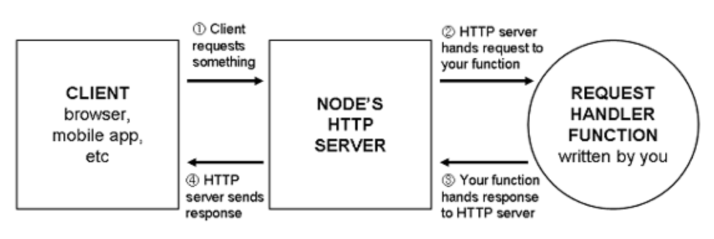
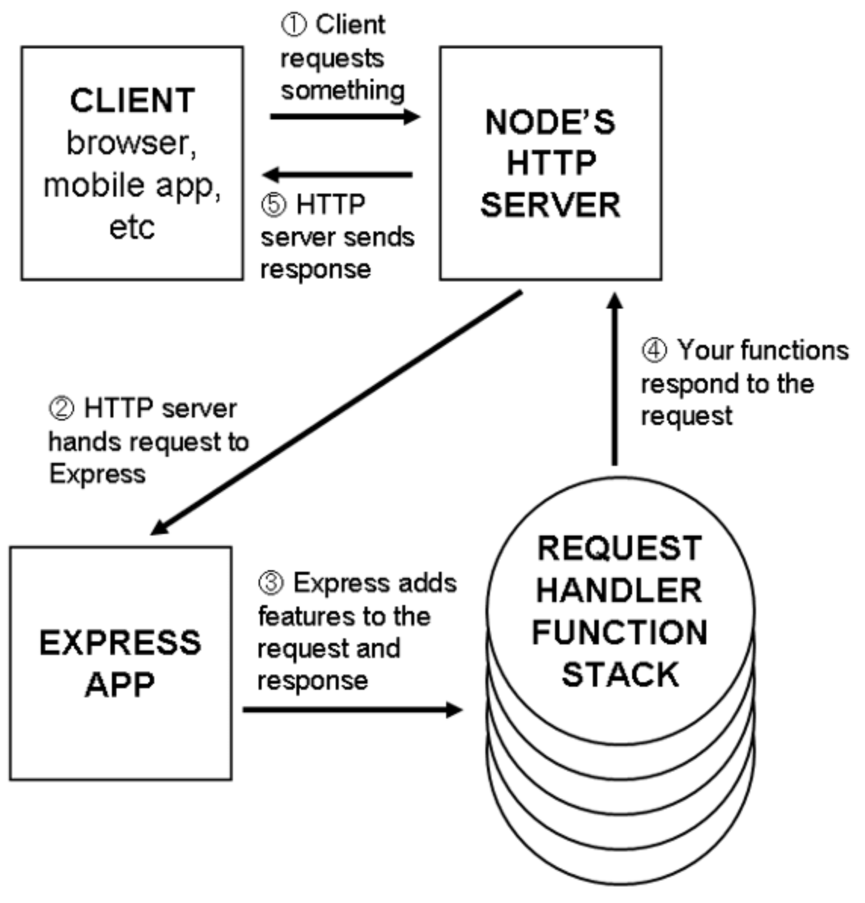
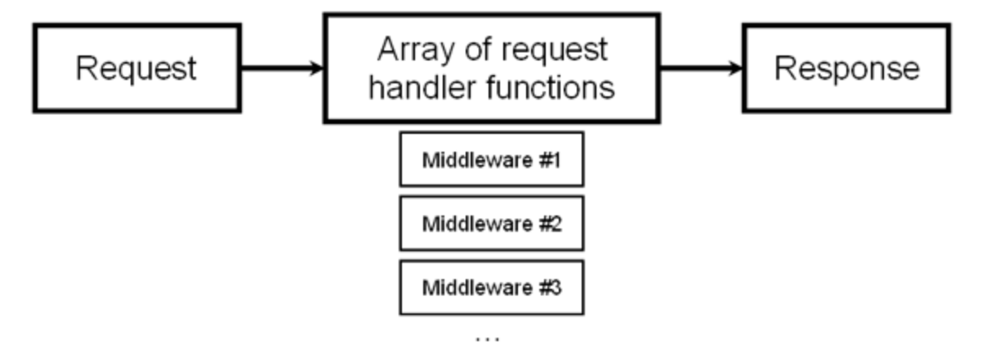

Express - Node.js Web应用程序框架
分享者: 周平 (前端-研发工程师)
时间: 11月17日 下午4:30-5:30
地点: 上海图灵会议室(38F)
- 什么是Express
- Express与Node.js
- 中间件
- 路由
- 视图


Node.js 处理请求var app = http.createServer(function(request, response) {
response.writeHead(200, { "Content-Type": "text/plain" });
response.end("Hello, world!");
});
Express 处理请求var express = require("express");
var http = require("http");
var app = express();
app.use(function(request, response) {
response.writeHead(200, { "Content-Type": "text/plain" });
response.end("Hello, World!");
});
http.createServer(app).listen(3000);
多个权限需要对应权限数组相加
中间件与原生的Node处理函数非常类似(接受一个请求并做出响应),但是与原生不同的是,中间件将处理过程进行划分,并且使用多个函数构成一个完整的处理流程

中间件 代码示例var express = require('express');
var path = require('path');
var logger = require('morgan');
var cookieParser = require('cookie-parser');
var bodyParser = require('body-parser');
var app = express();
// 记录日志中间件
app.use(logger('dev'));
// 用于解析请求的body体中间件
app.use(bodyParser.json());
app.use(bodyParser.urlencoded({ extended: false }));
// 解析用户的 cookies中间件
app.use(cookieParser());
// 静态文件中间件
app.use(express.static(path.join(__dirname, 'public')));
.
.
.
HTTP方法和URL进行映射来实现对不同请求的分别处理含参的通配路由// 匹配传入的请求，如：/users/123，/users/horse_ebooks
app.get("/users/:userid", function(req, res) {
// 将userId转换为整型
var userId = parseInt(req.params.userid, 10);
// ...
});
使用正则表达式匹配路由app.get(/^\/users\/(\d+)$/, function(req, res) {
// 通过序列号接收参数
var userId = parseInt(req.params[0], 10);
// ...
});
捕获查询参数app.get("/search", function(req, res) {
// req.query.q == "javasript-themed burrito"
// ...
});
app.js入口文件
var express = require("express");
var path = require("path");
// 引入 API Router
var apiRouter = require("./routes/api_router");
var app = express();
var staticPath = path.resolve(__dirname, "static");
app.use(express.static(staticPath));
// API Router 文件的调用
app.use("/api", apiRouter);
app.listen(3000);
api_router.js路由模块
var express = require("express");
var ALLOWED_IPS = [
"127.0.0.1",
"123.456.7.89"
];
var api = express.Router();
api.use(function(req, res, next) {
var userIsAllowed = ALLOWED_IPS.indexOf(req.ip) !== -1;
if(!userIsAllowed) {
res.status(401).send("Not authorized!");
} else {
next();
}
});
api.get("/users", function(req, res) { /* ... */ });
api.post("/users", function(req, res) { /* ... */ });
api.get("/messages", function(req, res) { /* ... */ });
api.post("/messages", function(req, res) { /* ... */ });
module.exports = api;
var express = require("express");
var path = require("path");
var ejs = require("ejs");
var app = express();
app.locals.appName = "Song Lyrics";
//视图引擎（view engine）
app.set("view engine", "ejs");
app.set("views", path.resolve(__dirname, "views"));
app.use(function(req, res, next) {
res.locals.userAgent = req.headers["user-agent"];
next();
});
app.get("/about", function(req, res) {
res.render("about", {
currentUser: "india-arie123"
});
});
app.get("/contact", function(req, res) {
res.render("contact.ejs");
});
app.use(function(req, res) {
res.status(404);
res.render("404.html", {
urlAttempted: req.url
});
});
app.listen(3000);
const fs = require('fs')
// 异步打开
fs.open(filename, flags, [mode], (err, fd) => {
// fd返回的是一个文件的描述符，是一个数字
})
// 同步打开文件
var fs = openSync(filename, flags, [mode])
fs.open(filename, flags, [mode], (err, fd) => {
// fd返回的是一个文件的描述符，是一个数字
fs.close(fd, err => {})
})
fs.read(fd, buffer, offset, length, position, callback)
fd 文件描述符，是open方法的回调函数中获取到的，是一个数字。buffer buffer对象，用于指定将文件数据读取到那个缓存区，如果不定义，则会生成一个新的缓存区，进行存放新读取到的数据。offset 整数，用于指定向缓存区中写入数据时的开始位置，以字节为单位。其实也就是，读入到缓存中的数据，从buffer对象的第几个元素开始写入。length 整数，表示读入的数据，多少数据写入到buffer对象中去，要保证不能超出buffer的容纳范围，否则会抛出一个范围异常。position 整数值，表示，从文件中的哪个位置，开始读取数据，如果设置为非0的整数，则从该整数所示的位置，读取长度为length的数据到buffer对象中。callback 三个参数 err,bytesRead,buffererr为读取文件操作失败时，触发的错误对象bytesRead为读取到的字节数，如果文件的比较大，则该值就是length的值，如果文件的大小比length小，则该值为实际中读取到的字节数。buffer为读取到的内容，保存到了该缓存区，如果在使用read时，传入了buffer对象，则此处的buffer就是传入的buffer对象。 如果在read时没有传入buffer，则此处的buffer为新创建的buffer对象fs.open('fs.txt', 'r', function(err, fd) {
//读取fs.text，文件的内容为“123456789”，长度为9
var buffer = new Buffer([0, 0, 0, 0, 0, 0, 0, 0, 0, 0])
//创建一个长度为10，初始值为0的buffer对象。
//数据比较少，就直接写了，否则还是使用fill方法吧。
console.log(buffer)
//<Buffer 00 00 00 00 00 00 00 00 00 00>
//初始时的buffer对象
fs.read(fd, buffer, 4, 6, 4, function(err, bytesRead, buffer1) {
//读取到的数据，从buffer对象的第5个元素开始保存，保存6个字节的元素
//读取文件，是从文件的第5个字节开始，因为文件中内容长度为9，
//那么，读取到的内容就是56789，所以buffer的最后一位仍然为初始值。
//由于想要读取的字节长度为6，但是文件内容过短，只读取了5个字节的有效数据
//就到了文件的结尾了，所以，bytesRead的值不是6，而是5。
//而buffer对象，为被写入新数据之后的对象。
console.log(bytesRead) //5
console.log(buffer1)
//<Buffer 00 00 00 00 35 36 37 38 39 00>
console.log(buffer)
//<Buffer 00 00 00 00 35 36 37 38 39 00>
//它们俩是完全相同的。其实质是，它们俩占据的内存也是相同的，
//它们就是同一个缓存区。
})
})
// 写入Buffer数据
fs.write(fd, buffer, offset, length, position, callback)
// 写入str数据内容
fs.write(fd, data[, position[, encoding]], callback)
//使用Buffer写入
fs.open('sam.js', 'w+', (err, fd) => {
var buf = new Buffer('sam', 'utf8')
fs.write(fd, buf, 0, buf.length, 0, (err, bw, buf) => {
fs.close(fd)
})
})
//直接使用string写入
fs.open('sam.js', 'w+', (err, fd) => {
fs.write(fd, 'sam', 'utf8', 0, (err, bw, buf) => {
fs.close(fd)
})
})
fs.ftruncate(fd, 10, err => {
})
read方法,使用来读取已经打开后的文件。 他不用用来进行打开文件操作
fs.readFile(fileName,[options],(err,data) => { // data为读取成功时，返回的读取信息，该信息的返回格式，是由options对象中的encoding决定 })options格式为{ encoding: 'utf-8', flag: 'r' }
encoding表示读取文件成功后，返回的数据的编码格式，默认返回格式为buffer对象flag的值表示是如何读取文件的，支持的参数，与使用fs.open时相同，通常为r，r+着两种方式。fs.readFile('test.js', 'utf-8', (err,data) => {
if (err) {
console.log('readFile file error')
return false
}
console.log(data)
})
fs.writeFile(fileName, data, [options], (err, data) => {
// data
})
fs.appendFile(fileName, data, [options], (err, data) => {
})
options同上。
// 代码简短清晰
// 同步读取文件，容易阻塞
// 读取大文件时，容易内存溢出
function copy(src, target) {
console.log(target)
fs.writeFileSync(target, fs.readFileSync(src))
}
fs.unlink(fileName, data, [options], (err, data) => {
// data
})
fs.stat(path,callback);
//传入的参数是文件路径，和回调函数
fs.lstat(path,callback);
//传入的参数是目录的路径，和回调函数
fs.fstat(fd,callback);
//传入的参数是文件描述符，和回调函数
//所以，该方法在readFile时，在open打开文件成功之后，才使用。
callback(err,stats){
//回调函数的参数是相同的，第一个参数为错误对象，包含错误信息
//第二个参数，也就是本篇文章的重点，为一个State对象的实例，包含对应文件的或者目录的相关信息
}
atime 文件数据上次被访问的时间mtime 文件上次被修改的时间ctime 文件状态上次改变的时间birthtime 文件被创建的时间stats.isFile() 如果是文件返回 true，否则返回 false。stats.isDirectory() 如果是目录返回 true，否则返回 false。stats.isBlockDevice() 如果是块设备返回 true，否则返回 false。stats.isCharacterDevice() 如果是字符设备返回 true，否则返回 false。stats.isSymbolicLink() 如果是软链接返回 true，否则返回 false。stats.isFIFO() 如果是FIFO，返回true，否则返回 false。FIFO是UNIX中的一种特殊类型的命令管道。stats.isSocket()如果是 Socket 返回 true，否则返回 false。fs.mkdir(path[, mode(0777)], () => {})
mkdir无法创建多层级目录
fs.readdir(path, (err, files) => {
// files 为 目录下的文件数组列表。
})
fs.readdir('./testDir', (err, files) => {
if (err) {
console.log(err)
return
}
console.log('files', files)
var count = files.length
var results = {}
files.forEach(filename => {
fs.readFile(`./testDir/${filename}`, 'utf8', (err, data) => {
results[filename] = data
count--
if (count <= 0) {
// 对所有文件进行处理
console.log('result', results)
}
})
})
})
fs.rmdir(path, ()=>{})
使用fs.rmdir(path)是有局限性的，只能删除空目录
function rmDirAll(dirpath) {
var stats = fs.statSync(dirpath) // 获取当前文件的状态
if (stats.isFile()) {
// 如果是个文件
fs.unlinkSync(dirpath)
console.log(`删除成功： ${dirpath}`)
} else if (stats.isDirectory()) {
// 若当前路径是文件夹，则获取路径下所有的信息，并循环
var files = fs.readdirSync(dirpath)
files.forEach(item => {
var itempath = path.join(dirpath, item)
// var itempath = getLastCode(path) == '/' ? path + item : path + '/' + item // 拼接路径
var st = fs.statSync(itempath)
if (st.isFile()) {
fs.unlinkSync(itempath)
console.log(`删除成功： ${itempath}`)
} else if (st.isDirectory()) {
// 当前是文件夹，则递归检索
rmDirAll(itempath)
}
})
// 现在可以删除文件夹
fs.rmdir(dirpath)
console.log(`删除成功： ${dirpath}`)
}
}
watchfile方法监听一个文件，如果该文件发生变化，就会自动触发回调函数。
fs.watchFile(filename[, options], (current, previous) => {
// 当前的状态对象和以前的状态对象
})
[options]
interval 表示目标应该每隔多少毫秒被轮询 (Default: 5007)
```js const fs = require('fs'), Event = require('events').EventEmitter, event = new Event();
//原始方法getCur //原始属性prev var watchFile = function(file,interval,cb){ var pre,cur; var getPrv = function(file){ var stat = fs.statSync(file); return stat; } var getCur = function(file){ cur = getPrv(file); console.log(cur,pre); if(cur.mtime.toString()!==pre.mtime.toString()){ cb('change'); } pre = cur; //改变初始状态 } var init = (function(){ pre = getPrv(file); //首先获取pre event.on('change',function(){ getCur(file); }); setInterval(()=>{ event.emit('change'); },interval); })() } watchFile('sam.js',2000,function(eventname){ console.log(eventname); }) ```
unwatchfile方法用于解除对文件的监听。
fs.unwatchFile(filename[, listener])
[listener]
fs.watch() 比 fs.watchFile 和 fs.unwatchFile 更高效,fs.watch调用的是native API。而fs.watchFile是调用的是fs.stat
fs.watch(filename[, options][, listener])
[options]
在大多数平台，当一个文件出现或消失在一个目录里时，'rename' 会被触发
fs.createReadStream(path, [options])
[options]
flags指定文件操作，默认'r',读操作；encoding指定读取流编码；autoClose是否读取完成后自动关闭，默认true；start指定文件开始读取位置；end指定文件开始读结束位置读取数据触发事件：
读取数据的对象操作方法：
var rs = fs.createReadStream(__dirname + '/test.txt', { start: 0, end: 2 })
//open是ReadStream对象中表示文件打开时事件，
rs.on('open', fd => {
console.log('开始读取文件')
})
rs.on('data', data => {
console.log(data.toString())
})
rs.on('end', () => {
console.log('读取文件结束')
})
rs.on('close', () => {
console.log('文件关闭')
})
rs.on('error', err => {
console.error(err)
})
//暂停和回复文件读取；
rs.on('open', () => {
console.log('开始读取文件')
})
rs.pause()
rs.on('data', data => {
console.log(data.toString())
})
setTimeout(() => {
rs.resume()
}, 2000)
fs.createWriteStream(path, [options])
[options]
flags:指定文件操作，默认'w'encoding,指定读取流编码start指定写入文件的位置写入数据触发事件：
写入数据方法：
/* chunk, 可以为Buffer对象或一个字符串，要写入的数据
* [encoding], 编码
* [callback], 写入后回调
*/
ws.write(chunk, [encoding], [callback]);
/* [chunk], 要写入的数据
* [encoding], 编码
* [callback], 写入后回调
*/
ws.end([chunk], [encoding], [callback]);
var ws = fs.createWriteStream(__dirname + '/test.txt', { start: 0 })
var buffer = new Buffer('我也喜欢你')
ws.write(buffer, 'utf8', (err, buffer) => {
console.log(arguments)
console.log('写入完成，回调函数没有参数')
})
//最后再写入的内容
ws.end('再见')
// createWriteStream方法和createReadStream方法配合，可以实现拷贝大型文件。
var input = fs.createReadStream(fileName)
var output = fs.createWriteStream('./testFile2.txt')
input.on('data', d => {
// 读取数据写入
output.write(d)
})
input.on('error', err => {
throw err
})
input.on('end', () => {
output.end()
})
rs.pipe(destination, [options])
destination 必须一个可写入流数据对象[opations] end 默认为true，表示读取完成立即关闭文件；// node中支持pipe方法，类似于管道，将读出来的内容通过管道写入到目标文件中
function copy(src, target) {
var rs = fs.createReadStream(src);
var ws = fs.createWriteStream(target);
rs.pipe(ws);
rs.on('data', function (data) {
console.log('数据可读')
});
rs.on('end', function () {
console.log('文件读取完成');
//ws.end('再见')
});
}
copy('./movie.mkv', './new-movie.mkv')
fs.rename(oldPath, newPath, callback);
新目录/文件的完整路径及名；如果新路径与原路径相同，而只文件名不同，则是重命名
fs.rename('./renameFile1.txt', './renameFile.txt', function(err) { if (err) { console.error(err) return } console.log('重命名成功') })
fs.exists(path, callback)
const outputFolder = './test'
if (fs.existsSync(outputFolder)) {
console.log('Removing ' + outputFolder)
fs.rmdirSync(outputFolder)
} else {
fs.mkdirSync(outputFolder)
}
// create a file to stream archive data to.
var output = fs.createWriteStream(__dirname + '/example.zip')
var archive = archiver('zip', {
zlib: { level: 9 } // Sets the compression level.
})
// // listen for all archive data to be written
// // 'close' event is fired only when a file descriptor is involved
output.on('close', function() {
console.log(archive.pointer() + ' total bytes')
console.log(
'archiver has been finalized and the output file descriptor has closed.'
)
})
// // This event is fired when the data source is drained no matter what was the data source.
// // It is not part of this library but rather from the NodeJS Stream API.
// // @see: https://nodejs.org/api/stream.html#stream_event_end
// output.on('end', function() {
// console.log('Data has been drained')
// })
// // good practice to catch warnings (ie stat failures and other non-blocking errors)
// archive.on('warning', function(err) {
// if (err.code === 'ENOENT') {
// // log warning
// } else {
// // throw error
// throw err
// }
// })
// // good practice to catch this error explicitly
// archive.on('error', function(err)
// throw err
// })
// // pipe archive data to the file
// archive.pipe(output)
// // 追加一个文件流
// var file1 = __dirname + '/fs.md'
// archive.append(fs.createReadStream(file1), { name: 'fs.md' })
// //追加文件
// archive.file('./basic.js', { name: 'basic.js' })
// // 追加testDir并重命名为new-subdir
// archive.directory('./testDir/', 'new-subdir')
// // 追加subdir的内容
// archive.directory('./testDir/', false)
// // // append files from a glob pattern
// // archive.glob('subdir/*.txt')
// // finalize the archive (ie we are done appending files but streams have to finish yet)
// // 'close', 'end' or 'finish' may be fired right after calling this method so register to them beforehand
// archive.finalize()
// 解压
// fs.createReadStream('./example.zip').pipe(unzip.Extract({ path: 'example' }))
// 文件夹（目录）的复制不同于文件的复制，文件夹操作时还要考虑操作对象是否存在及操作对象的类型（文件或目录）。
function copyDir(src, dist, callback) {
fs.access(dist, err => {
if (err) {
// 目录不存在时创建目录
fs.mkdirSync(dist)
}
_copy(null, src, dist)
})
function _copy(err, src, dist) {
if (err) {
callback(err)
} else {
fs.readdir(src, (err, paths) => {
if (err) {
callback(err)
} else {
paths.forEach(name => {
const _src = path.join(src, name)
const _dist = path.join(dist, name)
fs.stat(_src, (err, stat) => {
if (err) {
callback(err)
} else {
// 判断是文件还是目录
if (stat.isFile()) {
fs.writeFileSync(_dist, fs.readFileSync(_src))
} else if (stat.isDirectory()) {
// 当是目录是，递归复制
copyDir(_src, _dist, callback)
}
}
})
})
}
})
}
}
}
copyDir('./testDir', './new', function(err) {
if (err) {
console.log(err)
}
})
// 实现远程文件下载
var url = 'http://s0.hao123img.com/res/img/logo/logonew.png'
http.get(url, function(res) {
var imgData = ''
res.setEncoding('binary') //一定要设置response的编码为binary否则会下载下来的图片打不开
res.on('data', function(chunk) {
imgData += chunk
})
res.on('end', function() {
console.log(imgData)
fs.writeFile('./logonew.png', imgData, 'binary', function(err) {
if (err) {
console.log('down fail')
}
console.log('down success')
})
})
})